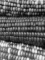
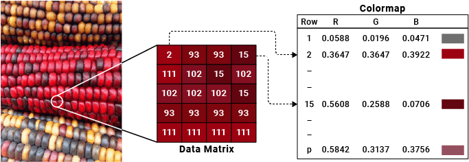
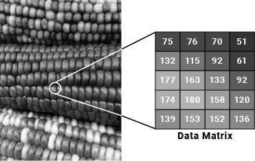
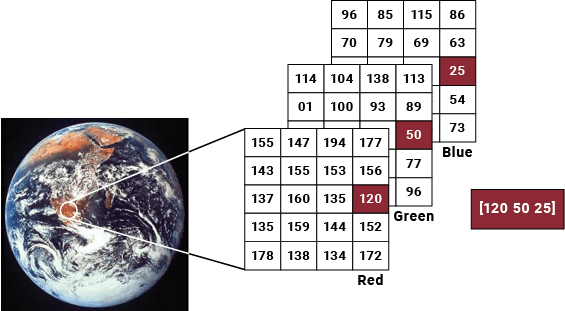

Working with Image Types in MATLAB
MATLAB® represents images as arrays (often two-dimensional matrices) in which each element corresponds to a single pixel in the displayed image. Working with images in MATLAB is similar to working with any other type of matrix data, and you can display any two-dimensional data as an image in MATLAB. There are two common ways to display images:
Read and Display Image File — Use
imshowto display image files, which typically represent a picture.Display Array Data as Image — Use
imageorimagescto display array data, which does not necessarily represent a picture but can contain complex patterns that can be visualized as an image.
Image Types
The three common types of images, which have various array dimensions, are indexed, grayscale (intensity), and RGB (truecolor). This table provides a summary of the image types.
| Image Type | Data Matrix | Colormap Matrix | Example |
|---|---|---|---|
| Indexed Image | m-by-n | p-by-3 | Read and Display Indexed Image
|
| Grayscale (Intensity) Image | m-by-n | None by default, but you can apply a colormap. | Read and Display Grayscale Image  |
| RGB (Truecolor) Image | m-by-n-by-3 | None |
If you are working with an image file, you can check the image type by using the
imfinfo function. For example,
determine the image type of
peppers.png.
info = imfinfo("peppers.png");
info.ColorTypeans = 'truecolor'
Read and Display Image File
Working with images often involves loading image data into the MATLAB workspace, displaying the image, and manipulating the image data. However, the process for working with an image depends on the image type.
Indexed Image
An indexed image is stored as an image data matrix, X, and
a colormap matrix, map. Each row of map
specifies the red, green, and blue components of a single color. Indexed images
use a direct mapping of pixel values to colormap values.
The color of each image pixel is determined by using the corresponding value of
X as an index (pointer) to color values stored in the
colormap. X is an
m-by-n matrix containing integers
such that the value 1 points to the first row in map, the
value 2 points to the second row, and so on.
For example, for this indexed image of corn, the value of 2 in the data matrix is an index to row 2 of the colormap, and the value of 15 in the data matrix is an index to row 15 of the colormap.

Read and Display Indexed Image
Load the indexed image using imread, specifying both a data matrix, X, and a colormap, map, as the output arguments. Then display the data matrix with the colormap.
[X,map] = imread("corn.png");
imshow(X,map)
map stores the colormap associated with the image file. However, you can specify any colormap using the imshow function. For example, convert map to a grayscale colormap and display the image data with the new colormap.
newmap = cmap2gray(map); imshow(X,newmap)

You can use matrix subscripting to select a single pixel from an image data matrix. The size of the image data matrix corresponds to the number of pixels in the image. For example, X represents an image that is composed of 415 rows and 312 columns of pixels.
sz = size(X)
sz = 1×2
415 312
Get the colormap index of the pixel at row 2, column 15 of X.
val = X(2,15)
val = uint8
39
Index into map and display the three values for the red, green, and blue intensities of this pixel.
color = map(val,:)
color = 1×3
0.4588 0.2902 0.2627
Grayscale (Intensity) Image
A grayscale image, sometimes referred to as an intensity image, is stored as an
m-by-n data matrix,
X, whose values represent intensities within some range.
A grayscale image is represented as a single matrix, with each element of the
matrix corresponding to one image pixel. While grayscale images are rarely saved
with a colormap, a grayscale colormap is still used to display them. In essence,
grayscale images are treated as indexed images.
For example, for this grayscale image of corn, the data matrix contains integers in the range [0, 255] to represent the intensity of each pixel.

Read and Display Grayscale Image
Load the grayscale image into the workspace and display it.
X = imread("corn_gray.png");
imshow(X)
You can display the grayscale image using a different colormap. For example, display the grayscale image in shades of blue and green by using the winter colormap.
imshow(X,winter)

You can use matrix subscripting to access the pixel intensities of the image. For example, get the grayscale intensity value of the pixel at row 2, column 15 of X.
val = X(2,15)
val = uint8
156
RGB (Truecolor) Image
An RGB image, sometimes referred to as a truecolor image, is stored as an m-by-n-by-3 data array that defines red, green, and blue color components for each individual pixel. Graphics file formats store RGB images as 24-bit images where the red, green, and blue components are 8 bits each. This arrangement yields a potential of 16 million colors. The precision with which a real-life image can be represented has led to the term “truecolor image.”
RGB images do not use a colormap. The color of each pixel is determined by the
combination of the red, green, and blue intensities stored in each color plane
at the pixel's location. For example, the red, green, and blue color components
of the pixel (10, 5) in an RGB image X are stored in
X(10,5,1), X(10,5,2), and
X(10,5,3), respectively.

Read and Display RGB Image
Load the RGB image. Because RGB image data is stored as an m-by-n-by-3 array where each pixel is represented by its red, green, and blue intensity values, the image data X contains the color data. Then display the image.
X = imread("earth.jpg");
imshow(X)
The data arrays of RGB images allow you to easily access image size and color. The size of the image data array corresponds to the number of pixels in the image. For example, X represents an image that is composed of 257 rows and 250 columns of pixels.
size(X)
ans = 1×3
257 250 3
To determine the color of a pixel, look at the RGB triplet stored in the third dimension of the data array. For example, get the color of the pixel at row 50, column 150 of X. The elements represent the red, green, and blue intensities of the pixel color, respectively, in the range of 0 to 255.
color = X(50,150,1:3)
color = 1×1×3 uint8 array
color(:,:,1) =
119
color(:,:,2) =
102
color(:,:,3) =
110
Display Array Data as Image
Working with array data can involve displaying it as an image to understand and analyze complex patterns, such as the relative intensity of data values. Using the image and imagesc functions, you can display the data from any two-dimensional matrix in your workspace as an image and apply a colormap to it.
For example, create a two-dimensional matrix. Then, display it as an image.
X = 4*peaks(100); image(X)

To better visualize differences in data values, you can customize how image data is displayed by using the imagesc function and specifying a colormap. Display the image with a colorbar to see how the image data maps to the applied colormap for varying intensities.
imagesc(X); colormap(turbo) colorbar
Set the axes limits style to be "equal" so that MATLAB preserves the aspect ratio of the image and displays the pixels as squares. Additionally, set the axes limits.
axis equal
xlim([0 100])
ylim([0 100])